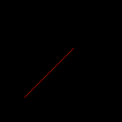
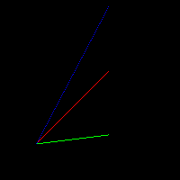
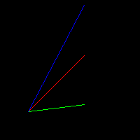

Chapter 2 线段绘制
在上一单元，我们了解了颜色的表示方式，基础颜色的绘制，以及基础的着色过程。对于着色过程，我们还引入了现代GPU的着色器的概念，并简单地描述了像素着色器。在这一章，我们将通过代码绘制最基础的几何图形，线段，的绘制。
在数学上，线段由两个端点和端点的连线构成。对于任何一个线段，我们可以通过线段的方程\(f(x)=ax+b\)来进行描述，或者我们也可以通过线段的一个端点，线段的方向，以及线段的长度来描述一个线段。
假设存在一根线段，其端点为\((x_1,y_1)\)，\((x_2,y_2)\)，我们试着找出所有在该线段上的点。
我们设向量\(\vec{L}=(x_2,y_2)-(x_1,y_1)\)，那么很显然，线段上的点满足参数方程
\[ y = \vec{L}*t + (x_1,y_1) \]
其中，\(t\)的取值范围为\([0,1]\)。
现在让我们结合C++代码，在屏幕空间上绘制绘制一根红色的，端点为\((0.2,0.2)\)和\((0.6,0.6)\)的线段。
2.1 线段的参数方程绘制
首先要说明的是我们的坐标系，由于PNG图片的特殊性，左上角为坐标原点，右下角为坐标的\((1,1)\)点，我们为了更好地贴合数学上的笛卡尔坐标系，我们将图片上下翻转，使得做左下角为原点，右上角为\((1,1)\)点。
// Pre-defined data types
#include "datatypes.hpp"
using namespace SoftwareRenderer;
void DrawLine(Image& img, Vector2f p1, Vector2f p2, float step, Color color)
{
float lx = p2.x - p1.x, ly = p2.y - p1.y;
for (auto t = 0.0f; t <= 1.0f; t += step) {
auto x = p1.x + t * lx;
auto y = p1.y + t * ly;
// 将屏幕坐标转换到像素空间
img.SetColor(img.Width() * x, img.Height() * y, color);
}
}
int main()
{
auto img = Image(200, 200);
DrawLine(img, Vector2f(0.2f, 0.2f), Vector2f(0.6f, 0.6f), 0.01f, Color::Red());
img.SaveAsPNG("line-0.01.png");
}编译并运行上面的代码，得到

我们观察到for (auto t = 0.0f; t <= 1.0f; t += step)这一层循环。由于计算机只能表示离散地数列，而无法表示连续的取值范围，我们只能通过一个极小数，0.01，的步进来拟合连续的表达。如果我们把这一个步进的步长取得过小，则会大幅度增加计算机的计算负担，实际上，当步长过小时，而我们整张图片的大小却只有200x200像素，这就意味着，每一小步增长甚至没有超出一个像素，那么有大量的像素被重新计算和重新着色。
如果我们将步长取得过大，那么线段则会发生断裂的现象。
很显然，对于这个算法，我们必须精确控制参数\(t\)的取值，才能得到完整的，同时又不过多绘制的线段。
2.2 像素空间绘制
我们首先尝试解决第一个问题，如何避免参数\(t\)的取值影响我们最后的呈现效果。
从数学的角度出发，\(t\)的取值越小，我们获得的结果一定越精确，当我们用微分\(dt\)作为变化的时候，我们则可获得完整的连续的线段。另一方面，将数学定义的世界空间的线段转换成我们的图片的时候，最终的线段只会用有限个像素表达。由于线段是连续的，那么在其两个端点间，\([x_1,x_2]\)，每一个\(x\)一定有一个\(y\)相对应。而在像素层面上来说，\(x\)的取值个数是有限的，因此我们可以用如下方式绘制：
// Pre-defined data types
#include "datatypes.hpp"
using namespace SoftwareRenderer;
void DrawLine(Image& img, Vector2f p1, Vector2f p2, Color color)
{
// 将屏幕坐标转换到像素空间
int px1 = p1.x * img.Width(), px2 = p2.x * img.Width();
int py1 = p1.y * img.Height(), py2 = p2.y * img.Height();
for (auto x = px1; x <= px2; x++) {
auto t = (x - px1) / (float)(px2 - px1);
auto y = (int)(t * (py2 - py1) + py1);
img.SetColor(x, y, color);
}
}
int main()
{
auto img = Image(200, 200);
DrawLine(img, Vector2f(0.2f, 0.2f), Vector2f(0.6f, 0.6f), Color::Red());
img.SaveAsPNG("line-pixel-space.png");
return 0;
}
在像素空间进行计算和绘制，我们确保了取值范围内的横向的每一个\(x\)都有一个\(y\)与之相对应。并且更重要的是，这意味着线段在横轴上的投影一定是连续的。然而，线段在纵轴上的投影却并非如此。
当前，线段的斜率为1，我们试着绘制两根额外的线段，绿色的线段斜率小于1，蓝色的线段斜率大于1。
// 斜率等于1
DrawLine(img, Vector2f(0.2f, 0.2f), Vector2f(0.6f, 0.6f), Color::Red());
// 斜率小于1
DrawLine(img, Vector2f(0.2f, 0.2f), Vector2f(0.6f, 0.25f), Color::Green());
// 斜率大于1
DrawLine(img, Vector2f(0.2f, 0.2f), Vector2f(0.6f, 0.96f), Color::Blue());
我们可以发现，红色和绿色的线段可以被连续的绘制，然而蓝色的线段却出现了明显的断点。这是因为当斜率大于1时，线段的横轴的投影是连续的，然而线段的纵轴的投影却不连续。从像素层面解释，高度的像素的个数大于宽度的像素个数，如果我们还是依旧宽度进行采样，显然不能覆盖所有的高度像素。一个简单的解决方案是，当斜率大于1时，以高度作为循环进行采样，当斜率小于1时，以宽度作为循环进行采样。
2.3 Bresenham直线算法
经过我们上一轮的改进，我们已经能够绘制基本的线段。但是我们的算法还有没有改进的余地，让绘制的效率变得更高呢？
首先我们观察循环中的两次运算
auto t = (x - px1) / (float)(px2 - px1);
auto y = (int)(t * (py2 - py1) + py1);当我们求系数\(t\)的时候，用到了浮点除法，而大量的浮点运算无疑会降低绘制的效率。将浮点运算转换成整数运算，将除法运算转换成加法和减法运算能有效提高绘制效率。
这里我们将介绍著名的Bresenham直线算法。Bresenham直线绘制算法由Jack Elton Bresenham于1962年在IBM工作时发明(Bresenham 1962)。由于算法简单易懂，并且绘制效率高效成为线段绘制的标准算法。
我们再来回顾一下线段的绘制过程。
我们从线段的一个端点出发，假使线段斜率小于等于1，且用横坐标扫描的方式进行绘制（对于斜率大于1的线段，我们可以通过纵坐标扫描的形式进行。由于算法是对称的，这里假定横坐标扫描），对于线段两个端点中的每一个\(x\)，都可以计算出一个\(y\)坐标。由于线段的斜率小于等于1，任意两个相邻的\(x\)，其对应的\(y\)要么相等，要么相差1。
// Pre-defined data types
#include "datatypes.hpp"
using namespace SoftwareRenderer;
void DrawLine(Image& img, Vector2f p1, Vector2f p2, Color color)
{
// 将屏幕坐标转换到像素空间
auto p1i = Vector2i(p1.x * img.Width(), p1.y * img.Height());
auto p2i = Vector2i(p2.x * img.Width(), p2.y * img.Height());
// 如果斜率大于1，我们将x和y交换，从而统一为横扫描
auto steep = false;
if (std::abs(p1i.x - p2i.x) < std::abs(p1i.y - p2i.y)) {
p1i = Vector2i(p1i.y, p1i.x);
p2i = Vector2i(p2i.y, p2i.x);
steep = true;
}
// 如果p1点在p2点的右侧，则交换两点，从而统一为从左到右扫描
if (p1i.x > p2i.x) {
std::swap(p1i, p2i);
}
auto dx = p2i.x - p1i.x;
auto dy = p2i.y - p1i.y;
auto derror = std::abs(dy / (float)dx);
auto error = 0.0f;
auto y = p1i.y;
for (auto x = p1i.x; x <= p2i.x; x++) {
if (steep) {
img.SetColor(y, x, color);
} else {
img.SetColor(x, y, color);
}
// 当x步进一格，累积一次error，如果error超过0.5，意味着y需要步进一格
error += derror;
if (error > 0.5f) {
// 如果斜率为正，则向上步进，否则向下步进
y += p2i.y > p1i.y ? 1 : -1;
// error-1，重置一个像素偏移，重新计算累积error
error -= 1;
}
}
}
int main()
{
auto img = Image(200, 200);
DrawLine(img, Vector2f(0.2f, 0.2f), Vector2f(0.6f, 0.6f), Color::Red());
DrawLine(img, Vector2f(0.2f, 0.2f), Vector2f(0.6f, 0.25f), Color::Green());
DrawLine(img, Vector2f(0.2f, 0.2f), Vector2f(0.6f, 0.96f), Color::Blue());
img.SaveAsPNG("bresenham.png");
return 0;
}编译运行上述程序，我们得到完美的线段渲染。
